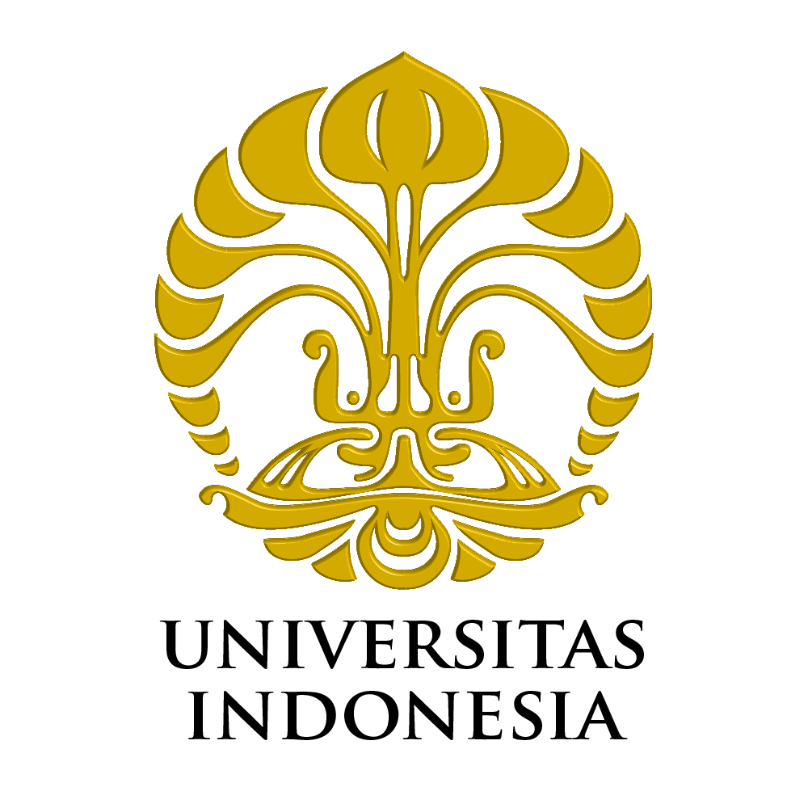

UNIVERSITAS INDONESIA
Informasi Universitas
- Lokasi: Depok, Jawa Barat, Indonesia
- Link Resmi: https://www.ui.ac.id
- Akreditasi Institusi: Unggul oleh BAN-PT

Jalur Masuk
- SNBP: Jalur seleksi berdasarkan prestasi akademik.
- SNBT: Jalur seleksi berdasarkan tes berbasis komputer nasional.
- PPKB: Program Pemerataan Kesempatan Belajar untuk siswa dari daerah tertentu.
- SJP: Seleksi Jalur Prestasi non-akademik.
- Talent Scouting: Penjaringan bakat dan potensi siswa tertentu.
- SIMAK UI: Seleksi masuk mandiri UI untuk kelas reguler dan paralel.
- SIMAK UI Kelas Internasional: Seleksi untuk program internasional.
- SIMAK RPL: Rekognisi Pembelajaran Lampau untuk mahasiswa berpengalaman kerja atau studi sebelumnya.
Fakultas dan Program Studi
Fakultas Ilmu Pengetahuan Budaya
- Seluruh jurusan sastra dan budaya: Arab, Belanda, Cina, Indonesia, Jepang, Jerman, Perancis, Inggris, Arkeologi, Ilmu Sejarah
Fakultas Ilmu Sosial dan Ilmu Politik
- Ilmu Politik, Hubungan Internasional, Komunikasi, Sosiologi, Kesejahteraan Sosial, Administrasi (Negara, Niaga, Fiskal), Antropologi Sosial
Fakultas Hukum

Fakultas Ekonomi dan Bisnis
Fakultas Psikologi
Fakultas Ilmu Komputer
Fakultas Teknik
- Arsitektur, Sipil, Mesin, Elektro, Metalurgi & Material, Kimia, Industri, Perkapalan, Arsitektur Interior
Fakultas MIPA
- Matematika, Statistika, Aktuaria, Fisika, Kimia, Biologi
Fakultas Kesehatan Masyarakat
- Kesehatan Masyarakat, Gizi, Keselamatan dan Kesehatan Kerja
Fakultas Kedokteran dan Kedokteran Gigi
- Pendidikan Dokter, Ilmu Biomedik, Pendidikan Dokter Gigi
Fakultas Ilmu Keperawatan dan Farmasi
- Ilmu Keperawatan, Farmasi
Fakultas Ilmu Administrasi
- Administrasi Niaga, Negara, Fiskal
Program Pendidikan Vokasi
- D3: Akuntansi, Perbankan, Hubungan Masyarakat, Pariwisata, Fisioterapi, dll
- D4: Bisnis Kreatif, Produksi Media, Manajemen Rekod, Administrasi Rumah Sakit, dll